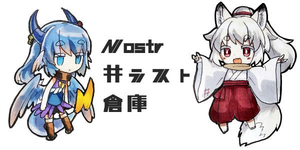

Nostr井ラスト倉庫
サンプルnpub(作成者・崇徳の公開鍵)：npub1e09suzmq9mp6nt0ud9ttl03790qjx70wzwlc2pwwghcusvwju54qs0c800
- 公開鍵で指定したユーザーが投稿している「#illust」タグつきの投稿を100件まで表示するよ
- nostrでイラストを投稿するときに「#illust」をつけて投稿するとメディア欄的な使い方ができます
自分の描いた絵の振り返りなどにどうぞ
- note~はnoteIDです 多くのクライアントで検索欄に貼り付けるとその投稿に飛べると思います
- NIP-36(閲覧注意)対応しました！「content-warning！閲覧するにはクリック」と表示されます
- 画像は直リンクそのまま取ってくるのでデータ通信量などご注意ください
- githubはこちら
- 任意のタグを指定して検索できるあのたぐすとっかonNostrもよろしく
- 「#illust」がついた投稿の画像を一覧で見たい場合はmurakmiiさんの#illust tagged notes on Nostrがあります
